Her gezi türü aynı şemayla yazılır. Şema hangi kategorinin açılacağını, her kutunun adını, çerçevesini, kaç tane açılacağını, hangi durumda başlayacağını ve bir paketin neleri "Dahil" ettiğini söyler. Plan sayfası bu şemayı okuyup aynı niyet kutularını kurar. Ozora ve Japonya prototipte çalışıyor; diğerleri aşağıda omurga olarak.
İskelet söylerTüre özel kutunun kategorisi, çerçevesi ve adı tür iskeletinde yazılı. Kaydın sözcüklerine göre tahmin edilmez (D1).
Paket tek niyettirTekne, retreat, kabin, festival kampı tek ana niyet. Kapsadığı kategorilerde kutu "Dahil" satırıyla gelir, karar istemez (D2).
Pass ve kiralık araç kapsarAradaki yolculuklar "Dahil · … ile" olarak kurulur (D10).
Başlangıç durumuTürün ya da AI'ın açtığı kutu "Aranıyor" ya da "Önerimiz" başlar. Asla kendiliğinden "Alındı" ya da "Ayarlandı" olmaz (D3).
Biçim kapatabilirGünübirlikte konaklama gibi: kategori "Gerek yok" ile kapanır, nedeni yazılır, Geri al ile döner (D4, F3).
Kaç kutu açılırKonaklama gece aralığına göre (D6). Uçuş bacak başına, aktarmalı tek niyet iki koçan (D7). Etkinlik ve yapılacak şehir başına.
Olmayan yok yazılmazİçinde niyet olmayan kategori çizilmez. Fotoğraf yoksa mozaik yerine tek kapak (C19).
Tanınır festival tablosu (Ozora, Tomorrowland, Sziget, Glastonbury…) ya da "festival, fest, rave"
Ana niyet: Festival biletiUçuş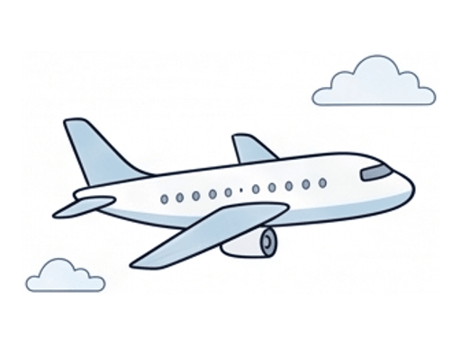
Uçuşİstanbul → BudapeştebiletbacakÖnerimizUçuşBudapeşte → İstanbulbiletbacakÖnerimiz
Konaklama KonaklamaBudapeşte · 1 gecekonaklama kartıgece aralığıSoruya bağlı
KonaklamaBudapeşte · 1 gecekonaklama kartıgece aralığıSoruya bağlı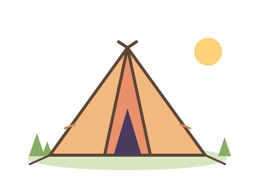
KampFestival kampı · 6 gecekonaklama kartıDahilfestival biletiyle Ulaşım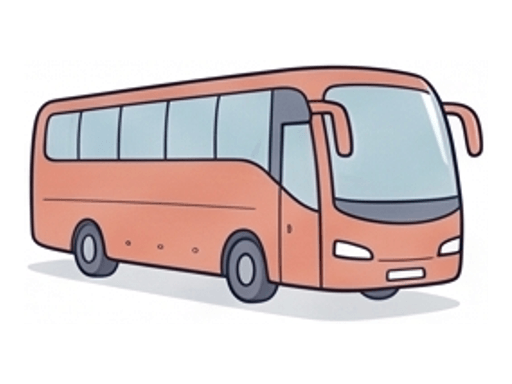
OtobüsBudapeşte → festivalbiletÖnerimizOtobüsFestival → BudapeştebiletÖnerimiz
Etkinlik ve turlar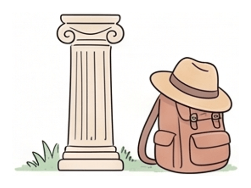
FestivalFestival bileti · 7 günkart sırasıÖnerimiz Yapılacaklar ve restoranlarGerek yok · festival odak: tur, müze, günübirlik önerisi yok
Belgeler ve internet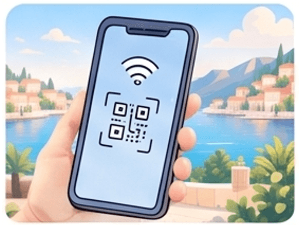
eSIMAvrupa eSIMkonaklama kartıÖnerimiz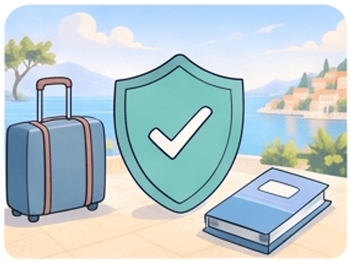
SigortaSeyahat sağlık sigortasıkonaklama kartıAranıyor Tanınır "liveaboard, dalış turu, dalış teknesi" · AI kalıbı (tekne)
Ana niyet: Tekne paketiUçuşUçuşİstanbul → HurgadabiletÖnerimiz
UçuşHurgada → İstanbulbiletÖnerimiz
Konaklama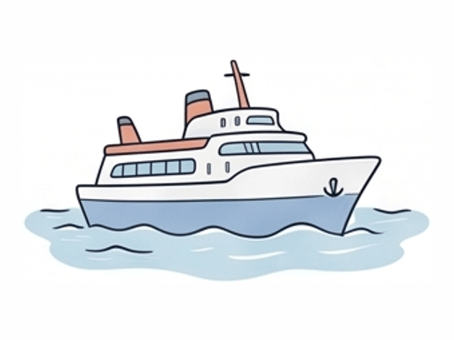
TekneLiveaboard · 7 gecekonaklama kartıgece aralığıAranıyor Ulaşım TransferHavalimanı → limanbiletDahiltekne paketiyle
TransferHavalimanı → limanbiletDahiltekne paketiyle Etkinlik ve turlarDalışGünde 3–4 dalışkart sırasıDahiltekne paketiyle
yalnız bu deneyim: tur ve şehir önerisi yok
Yapılacaklar ve restoranlar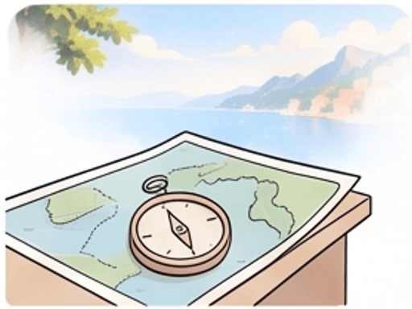
EkipmanEkipman kiralama · kişi × günkonaklama kartıSoruya bağlı Belgeler ve internetVizeMısır e-vizekonaklama kartıAranıyor
SigortaDalış sigortasıkonaklama kartıAranıyor
Tanınır "kayak, ski, snowboard" ve merkez adları (Bansko, Uludağ, Zermatt…)
Ana niyet: SkipassUçuşUçuşİstanbul → Sofyabileten yakın havalimanıÖnerimiz
UçuşSofya → İstanbulbiletÖnerimiz
KonaklamaKonaklamaBansko · 5 gecekonaklama kartıÖnerimiz Ulaşım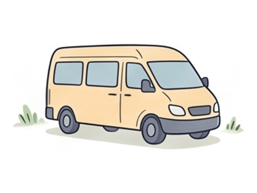
TransferSofya → BanskobiletAranıyor Etkinlik ve turlarSkipass5 gün · 2 kişikonaklama kartıkonaklama günleriÖnerimiz
EkipmanKiralama · kişi × günkonaklama kartıSoruya bağlı
OkulKayak okulukonaklama kartıSoruya bağlı
"kendi ekipmanım" deyince Ekipman, "ileri seviye" deyince Okul kapanır
Belgeler ve internetSigortaKayak kapsamlı sigortakonaklama kartıAranıyor
Tanınır "retreat, yoga, meditasyon, detoks, inziva, spa"
Ana niyet: Retreat programıUçuşUçuşİstanbul → Denpasar · aktarmalıbilettek niyet, iki koçanÖnerimiz
KonaklamaProgramRetreat · 7 gece, yemek ve derslerkonaklama kartıAranıyor 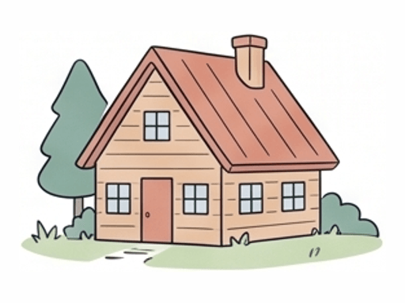
KonaklamaUbud · 7 gecekonaklama kartıDahilretreat programıyla UlaşımTransferHavalimanı → UbudbiletDahilretreat programıyla Etkinlik ve turlarEtkinlikEn çok 1 önerikart sırasıÖnerimiz
Yapılacaklar ve restoranlarGerek yok · gece hayatı ve parti önerisi yok
Belgeler ve interneteSIMEndonezya eSIMkonaklama kartıÖnerimiz
Tanınır "cruise, kruvaziyer, gemi turu" (yerleşik tür, D11)
Ana niyet: KabinUçuşUçuşİstanbul → BarselonabiletÖnerimiz
UçuşRoma → İstanbulbiletÖnerimiz
KonaklamaKabinGemi · 7 gecekonaklama kartıgece aralığıAranıyor
UlaşımTransferHavalimanı → limanbiletAranıyor GemiLimanlar arasıbiletDahilkabinle
Etkinlik ve turlarKıyı turuMarsilyakart sırasılimanÖnerimiz
Kıyı turuCenovakart sırasılimanÖnerimiz
Belgeler ve internetVizeSchengen · 3 ülkekonaklama kartıAranıyor
Tanınır "yol gezisi, road trip, araçla, karavan turu" (yerleşik tür, D11)
Ana niyet: Kiralık araçUçuşUçuşİstanbul → MilanobiletÖnerimiz
UçuşRoma → İstanbulbiletÖnerimiz
KonaklamaKonaklamaComo · 2 gecekonaklama kartıÖnerimiz KonaklamaFloransa · 3 gecekonaklama kartıÖnerimiz KonaklamaRoma · 3 gecekonaklama kartıAranıyor Ulaşım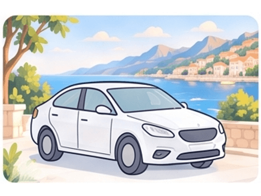
AraçKiralama · 10 günbiletÖnerimizYolComo → FloransabiletDahilkiralık araçla
YolFloransa → RomabiletDahilkiralık araçla
Etkinlik ve turlarEtkinlikŞehir başına önerikart sırasışehirÖnerimiz
Belgeler ve internetBelgeUluslararası ehliyetkonaklama kartıAranıyor
Tanınır tek gün, "günübirlik, hafta sonu" ve gece sayısı 0
KonaklamaGerek yok · aynı gün dönüş
UlaşımFeribotİstanbul → BursabiletÖnerimiz
OtobüsBursa → İstanbulbiletÖnerimiz
Etkinlik ve turlarEtkinlikBursakart sırasıÖnerimiz
Yapılacaklar ve restoranlar YapılacakBursakart sırasıÖnerimiz
YapılacakBursakart sırasıÖnerimiz Tanınır "fuar, konferans, toplantı, iş seyahati"
UçuşUçuşİstanbul → FrankfurtbiletÖnerimiz
UçuşFrankfurt → İstanbulbiletÖnerimiz
KonaklamaKonaklamaMesse yakını · 2 gecekonaklama kartıÖnerimiz UlaşımTransferHavalimanı → otelbiletAranıyor Etkinlik ve turlarFuarFuar biletikart sırasıAranıyor
Yapılacaklar ve restoranlar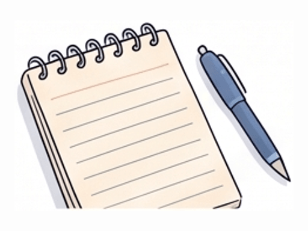
ToplantıNotlar ve saatlerkart sırasıÖnerimiz Tanınır "safari, game drive, lodge" · AI kalıbı (kamp)
Ana niyet: Lodge ya da kampUçuşUçuşİstanbul → NairobibiletÖnerimiz
KonaklamaKampLodge · 3 gecekonaklama kartıgece aralığıAranıyor
UlaşımUçuşNairobi → Masai Mara · küçük uçakbiletAranıyor
Etkinlik ve turlarSafariGame drivekonaklama kartıDahillodge paketiyle
Belgeler ve internetVizeKenya eTAkonaklama kartıAranıyor
SağlıkSarıhumma aşı kartıkonaklama kartıAranıyor
Tanınır "balayı, honeymoon"
Ana niyet: ResortUçuşUçuşİstanbul → MalébiletÖnerimiz
KonaklamaResortMalé atolü · 7 gecekonaklama kartıÖnerimiz UlaşımTransferDeniz uçağı ya da sürat teknesibiletDahilresort paketiyle
Etkinlik ve turlarEtkinlikÇift spası, özel akşam yemeği, şnorkelkart sırasıÖnerimiz
Tanınır geri kalan her şey
UçuşUçuşİstanbul → TokyobiletÖnerimiz
UçuşOsaka → İstanbulbiletAranıyor
KonaklamaKonaklamaTokyo · Kyoto · Hakone · Osakakonaklama kartıgece aralığıÖnerimiz Ulaşım TrenŞehirler arasıbiletbacakÖnerimiz
TrenŞehirler arasıbiletbacakÖnerimizVapurAshi GölübiletDahilHakone Free Pass ile
Etkinlik ve turlarEtkinlikŞehir başınakart sırasışehirÖnerimiz
Yapılacaklar ve restoranlarYapılacakŞehir başınakart sırasışehirÖnerimiz Belgeler ve interneteSIMJaponya eSIMkonaklama kartıÖnerimiz
SigortaSeyahat sağlık sigortasıkonaklama kartıAranıyor